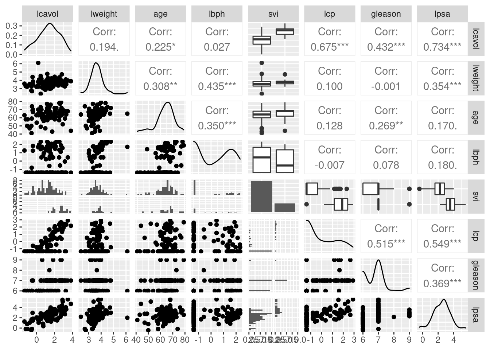

Dataset -
Onderzoeksvraag - Design?
Data-exploratie
prostate <- read_csv("https://raw.githubusercontent.com/statomics/sbc20/master/data/prostate.csv")
prostate <- prostate %>%
mutate(svi = as.factor(svi))
library(GGally)
prostate %>%
dplyr::select(-pgg45) %>%
ggpairs()

- Schatting voor parameter \(\beta_v\) mogelijks geen zuiver effect van
tumor volume.
- Zelfs als lcavol niet is geassocieerd met het lpsa, dan nog kunnen
patiënten met een groter tumor volume een hoger lpsa hebben omdat ze
bijvoorbeeld een aantasting van de zaadblaasjes hebben (svi status 1).
\(\rightarrow\) Confounding.
- Door de svi status in het model op te nemen corrigeren we voor de
mogelijkse confounding.
Vertalen van
onderzoeksvraag naar populatie parameters: effectgrootte
\[\text{E}\left(Y\vert X_v, X_w,
X_s\right) = \beta_0 + \beta_v X_v + \beta_w X_w + \beta_s
X_s\]
Schatten van
effectgrootte a.d.h.v. steekproef
- Kleinste kwadratentechniek
lmV <- lm(lpsa~lcavol, prostate)
summary(lmV)
Call:
lm(formula = lpsa ~ lcavol, data = prostate)
Residuals:
Min 1Q Median 3Q Max
-1.67624 -0.41648 0.09859 0.50709 1.89672
Coefficients:
Estimate Std. Error t value Pr(>|t|)
(Intercept) 1.50730 0.12194 12.36 <2e-16 ***
lcavol 0.71932 0.06819 10.55 <2e-16 ***
---
Signif. codes: 0 '***' 0.001 '**' 0.01 '*' 0.05 '.' 0.1 ' ' 1
Residual standard error: 0.7875 on 95 degrees of freedom
Multiple R-squared: 0.5394, Adjusted R-squared: 0.5346
F-statistic: 111.3 on 1 and 95 DF, p-value: < 2.2e-16
lmVWS <- lm(lpsa~lcavol + lweight + svi, prostate)
summary(lmVWS)
Call:
lm(formula = lpsa ~ lcavol + lweight + svi, data = prostate)
Residuals:
Min 1Q Median 3Q Max
-1.72966 -0.45767 0.02814 0.46404 1.57012
Coefficients:
Estimate Std. Error t value Pr(>|t|)
(Intercept) -0.26807 0.54350 -0.493 0.62301
lcavol 0.55164 0.07467 7.388 6.3e-11 ***
lweight 0.50854 0.15017 3.386 0.00104 **
sviinvasion 0.66616 0.20978 3.176 0.00203 **
---
Signif. codes: 0 '***' 0.001 '**' 0.01 '*' 0.05 '.' 0.1 ' ' 1
Residual standard error: 0.7168 on 93 degrees of freedom
Multiple R-squared: 0.6264, Adjusted R-squared: 0.6144
F-statistic: 51.99 on 3 and 93 DF, p-value: < 2.2e-16
De parameter bij lcavol geeft nu aan dat patiënten met een
tumorvolume dat 1% hoger ligt, maar eenzelfde prostaat gewicht en svi
status hebben, een prostaat antigeen concentratie zullen hebben dat
gemiddeld slechts 0.55% hoger ligt.
De reden dat we eerder een verschil van meer dan 0.72% vonden, kan
worden verklaard doordat patiënten met een verschil in tumorvolume vaak
ook verschillen in prostaat gewicht en svi status en omdat prostaat
gewicht en svi mogelijks ook een associatie vertonen met log PSA

Inferentie
Kunnen we hetgeen we zien in de steekproef vertalen naar de
populatie toe?
Hiervoor moeten we rekening houden dat we maar een heel klein
deel van de populatie hebben kunnen bemonsteren.
Gevens, statistieken en conclusies zijn stochastisch. Ze variëren
van steekproef tot steekproef.
We moeten die variabiliteit in kunnen schatten o.b.v. één enkele
steekproef!
Aannames?
Representatieve
steekproef:
\(\hat\beta_j\) is een onvertekende
schatter van \(\beta\) als steekproef
representatief is
\[E[\hat \beta_j]=\beta_j\]
Normaliteit
\[Y_{i} \sim N(\mu_i,\sigma^2)\]
\[Y_i \sim
N(\beta_0+\beta_vx_{iv}+\beta_wx_{iw} +
\beta_sx_{is},\sigma^2) \longrightarrow \hat \beta_j \sim N(\beta_j,
\sigma^2_{\hat \beta_j})\]
en lineaire combinaties van de model parameterschatters zijn ook
normaal verdeeld.
\[
\longrightarrow L^T\hat \beta \sim N(L^T\beta,
\sigma^2_{L^T\hat{\boldsymbol{\beta}}})
\]
Onafhankelijkheid
en gelijkheid van variantie
\[\sigma^2_{L^T\hat{\boldsymbol{\beta}}} =
c_L \sigma^2 \]
\[\hat \sigma^2 = MSE = \sum\limits_{i=1}
^ n \frac{(Y_i - \hat Y_i)^2}{n-p}\]
\[SE_{L^T\hat{\boldsymbol{\beta}}} = c_L
\hat \sigma \]
\[ T = \frac{L\hat{\boldsymbol{\beta}} -
L\boldsymbol{\beta}}{\text{SE}_{L\hat{\boldsymbol{\beta}}}}
\sim t_{n-p}\]
BI en T-test \(H_0: L\boldsymbol{\beta}
= 0\) vs \(H_1: L\boldsymbol{\beta}
\neq 0\)
F statistiek volgt F-verdeling onder de \(H_0\) \[ F =
\frac{MSR_2 - MSR_1}{MSE} \sim F_{p_2 - p_1,n-p_2}\]
R - output
library(car)
summary(lmVWS)
Call:
lm(formula = lpsa ~ lcavol + lweight + svi, data = prostate)
Residuals:
Min 1Q Median 3Q Max
-1.72966 -0.45767 0.02814 0.46404 1.57012
Coefficients:
Estimate Std. Error t value Pr(>|t|)
(Intercept) -0.26807 0.54350 -0.493 0.62301
lcavol 0.55164 0.07467 7.388 6.3e-11 ***
lweight 0.50854 0.15017 3.386 0.00104 **
sviinvasion 0.66616 0.20978 3.176 0.00203 **
---
Signif. codes: 0 '***' 0.001 '**' 0.01 '*' 0.05 '.' 0.1 ' ' 1
Residual standard error: 0.7168 on 93 degrees of freedom
Multiple R-squared: 0.6264, Adjusted R-squared: 0.6144
F-statistic: 51.99 on 3 and 93 DF, p-value: < 2.2e-16
Anova(lmVWS, type = "III")
Conclusie
De associaties tussen lpsa \(\leftrightarrow\) log kanker volume, lpsa
\(\leftrightarrow\) log prostaat
gewicht en lpsa \(\leftrightarrow\)
status van de zaadblaasjes zijn respectievelijk extreem significant
(\(p<<0.001\)) en sterk
significant (\(p = 0.001\) en \(p = 0.002\)).
- interpretaties van de hellingen en BI!
Wat als aannames niet
zijn voldaan?
- Normaliteit en heteroscedasticiteit niet voldaan: transformatie van
Y
- Lineariteit niet voldaan: transformatie van X of hogere orde termen
(interacties en machten \(X^2, X^3,
...\)).
- Normaliteit niet voldaan: bij grote steekproeven CLT
LS0tCnRpdGxlOiAnMTAuIFJlY2FwOiBBbGdlbWVlbiBMaW5lYWlyIE1vZGVsIC0gQWRkaXRpZWYgTW9kZWwnCmF1dGhvcjogIkxpZXZlbiBDbGVtZW50IgpkYXRlOiAic3RhdE9taWNzLCBHaGVudCBVbml2ZXJzaXR5IChodHRwczovL3N0YXRvbWljcy5naXRodWIuaW8pIgpvdXRwdXQ6CiAgaHRtbF9kb2N1bWVudDoKICAgIGNvZGVfZG93bmxvYWQ6IHllcwogICAgdGhlbWU6IGNvc21vCiAgICB0b2M6IHllcwogICAgdG9jX2Zsb2F0OiB5ZXMKICAgIGhpZ2hsaWdodDogdGFuZ28KICAgIG51bWJlcl9zZWN0aW9uczogeWVzCiAgcGRmX2RvY3VtZW50OgogICAgdG9jOiB0cnVlCiAgICBudW1iZXJfc2VjdGlvbnM6IHRydWUKICAgIGxhdGV4X2VuZ2luZTogeGVsYXRleAotLS0KCmBgYHtyIHNldHVwLCBpbmNsdWRlPUZBTFNFfQprbml0cjo6b3B0c19jaHVuayRzZXQoaW5jbHVkZSA9IFRSVUUsIGNvbW1lbnQgPSBOQSwgZWNobyA9IFRSVUUsCiAgICAgICAgICAgICAgICAgICAgICBtZXNzYWdlID0gRkFMU0UsIHdhcm5pbmcgPSBGQUxTRSkKbGlicmFyeSh0aWR5dmVyc2UpCmBgYAoKCmBgYHtyIGluY2x1ZGU9RkFMU0V9CiNEbyBub3QgcnVuIGR1cmluZyB0aGUgbGVjdHVyZSB3aGVuIHdlIHdvcmsgaW50ZXJhY3RpdmVseQpzZXQuc2VlZCgxMzE0KQpgYGAKCiMgRGF0YXNldCAtIE9uZGVyem9la3N2cmFhZyAtIERlc2lnbj8KCi0gUHJvc3RhYXRrYW5rZXIgY2FzZSBzdHVkaWUKLSBBc3NvY2lhdGllIHR1c3NlbiBwcm9zdGFhdCBzcGVjaWZpZWsgYW50aWdlbiBjb25jZW50cmF0aWUgZW4gYW5kZXJlIHByZWRpY3RvcmVuCgotIFR5cGUgcmVzcG9uc2U/Ci0gVHlwZSBwcmVkaWN0b3Jlbj8KCiMgRGF0YS1leHBsb3JhdGllCgpgYGB7cn0KcHJvc3RhdGUgPC0gcmVhZF9jc3YoImh0dHBzOi8vcmF3LmdpdGh1YnVzZXJjb250ZW50LmNvbS9zdGF0b21pY3Mvc2JjMjAvbWFzdGVyL2RhdGEvcHJvc3RhdGUuY3N2IikKCnByb3N0YXRlIDwtIHByb3N0YXRlICU+JQogIG11dGF0ZShzdmkgPSBhcy5mYWN0b3Ioc3ZpKSkKCmxpYnJhcnkoR0dhbGx5KQpwcm9zdGF0ZSAlPiUKICBkcGx5cjo6c2VsZWN0KC1wZ2c0NSkgICU+JQogIGdncGFpcnMoKQpgYGAKCi0gU2NoYXR0aW5nIHZvb3IgcGFyYW1ldGVyICRcYmV0YV92JCBtb2dlbGlqa3MgZ2VlbiB6dWl2ZXIgZWZmZWN0IHZhbiB0dW1vciB2b2x1bWUuCi0gWmVsZnMgYWxzIGxjYXZvbCBuaWV0IGlzIGdlYXNzb2NpZWVyZCBtZXQgaGV0IGxwc2EsICBkYW4gbm9nIGt1bm5lbiBwYXRpw6tudGVuIG1ldCBlZW4gZ3JvdGVyIHR1bW9yIHZvbHVtZSBlZW4gaG9nZXIgbHBzYSBoZWJiZW4gb21kYXQgemUgYmlqdm9vcmJlZWxkIGVlbiBhYW50YXN0aW5nIHZhbiBkZSB6YWFkYmxhYXNqZXMgaGViYmVuIChzdmkgc3RhdHVzIDEpLgokXHJpZ2h0YXJyb3ckIENvbmZvdW5kaW5nLgotIERvb3IgZGUgc3ZpIHN0YXR1cyBpbiBoZXQgbW9kZWwgb3AgdGUgbmVtZW4gY29ycmlnZXJlbiB3ZSB2b29yIGRlIG1vZ2VsaWprc2UgY29uZm91bmRpbmcuCgojIFZlcnRhbGVuIHZhbiBvbmRlcnpvZWtzdnJhYWcgbmFhciBwb3B1bGF0aWUgcGFyYW1ldGVyczogZWZmZWN0Z3Jvb3R0ZQoKXFtcdGV4dHtFfVxsZWZ0KFlcdmVydCBYX3YsIFhfdywgWF9zXHJpZ2h0KSA9IFxiZXRhXzAgKyBcYmV0YV92IFhfdiArIFxiZXRhX3cgWF93ICsgXGJldGFfcyBYX3NcXQoKCi0gQXNzb2NpYXRpZSB2YW4gcHJlZGljdG9yZW4gbWV0IGxvZyBQU0E6IGhlbGxpbmdlbiB2YW4gaGV0IG1vZGVsCi0gTWVlciBhY2N1cmF0ZSBwcmVkaWN0aWVzIGRvb3IgbWVlcmRlcmUgcHJlZGljdG9yZW4gc2ltdWx0YWFuIGluIHJla2VuaW5nIHRlIGJyZW5nZW4KCgotIEludGVycHJldGF0aWU/CgogIC0gdmVyc2NoaWwgaW4gZ2VtaWRkZWxkZSB1aXRrb21zdCB0dXNzZW4gc3ViamVjdGVuIGRpZSBpbiDDqcOpbiBlZW5oZWlkIHZhbiBsb2cgdHVtb3Igdm9sdW1lICgkWF92JCkgdmVyc2NoaWxsZW4sIG1hYXIgZGV6ZWxmZGUgd2FhcmRlIGhlYmJlbiB2b29yIGRlIG92ZXJpZ2UgdmVya2xhcmVuZGUgdmFyaWFiZWxlbiAoJFhfdyQgZW4gJFhfcyQpIGluIGhldCBtb2RlbC4KCiAgLSBBc3NvY2lhdGllIHR1c3NlbiBsb2cgUFNBIGVuIGRlIHByZWRpY3RvciBsb2cgdHVtb3Igdm9sdW1lIHdhYXJiaWogZ2Vjb3JyaWdlZXJkIHdvcmR0IHZvb3IgZGUgb3ZlcmlnZSBwcmVkaWN0b3JlbiwgIGhpZXIgZHVzIGFzc29jaWF0aWUgdmFuIGxvZyBQU0EgZW4gaGV0IGxvZyB0dW1vciB2b2x1bWUgbmEgY29ycmVjdGllIHZvb3IgbG9nIHByb3N0YWF0Z2V3aWNodCBlbiBzdmktc3RhdHVzLgoKCiMgU2NoYXR0ZW4gdmFuIGVmZmVjdGdyb290dGUgYS5kLmgudi4gc3RlZWtwcm9lZgoKLSBLbGVpbnN0ZSBrd2FkcmF0ZW50ZWNobmllawoKYGBge3J9CmxtViA8LSBsbShscHNhfmxjYXZvbCwgcHJvc3RhdGUpCnN1bW1hcnkobG1WKQpsbVZXUyA8LSBsbShscHNhfmxjYXZvbCArIGx3ZWlnaHQgKyBzdmksIHByb3N0YXRlKQpzdW1tYXJ5KGxtVldTKQpgYGAKCkRlIHBhcmFtZXRlciBiaWogbGNhdm9sIGdlZWZ0IG51IGFhbiBkYXQgcGF0acOrbnRlbiBtZXQgZWVuIHR1bW9ydm9sdW1lIGRhdCAxJSBob2dlciBsaWd0LCBtYWFyIGVlbnplbGZkZSBwcm9zdGFhdCBnZXdpY2h0IGVuIHN2aSBzdGF0dXMgaGViYmVuLCBlZW4gcHJvc3RhYXQgYW50aWdlZW4gY29uY2VudHJhdGllIHp1bGxlbiBoZWJiZW4gZGF0IGdlbWlkZGVsZCBzbGVjaHRzIDAuNTUlIGhvZ2VyIGxpZ3QuCgpEZSByZWRlbiBkYXQgd2UgZWVyZGVyIGVlbiB2ZXJzY2hpbCB2YW4gbWVlciBkYW4gMC43MiUgdm9uZGVuLCBrYW4gd29yZGVuIHZlcmtsYWFyZCBkb29yZGF0IHBhdGnDq250ZW4gbWV0IGVlbiB2ZXJzY2hpbCBpbiB0dW1vcnZvbHVtZSB2YWFrIG9vayB2ZXJzY2hpbGxlbiBpbiBwcm9zdGFhdCBnZXdpY2h0IGVuIHN2aSBzdGF0dXMgZW4gb21kYXQgcHJvc3RhYXQgZ2V3aWNodCBlbiBzdmkgbW9nZWxpamtzIG9vayBlZW4gYXNzb2NpYXRpZSB2ZXJ0b25lbiBtZXQgbG9nIFBTQQoKCmBgYHtyIG91dC53aWR0aD0nODAlJywgZmlnLmFzcD0uOCwgZmlnLmFsaWduPSdjZW50ZXInLCBtZXNzYWdlPUZBTFNFLGVjaG89RkFMU0V9CmxpYnJhcnkocGxvdDNEKQpncmlkLmxpbmVzID0gMTAKeCA8LSBwcm9zdGF0ZSRsY2F2b2wKeSA8LSBwcm9zdGF0ZSRsd2VpZ2h0CnogPC0gcHJvc3RhdGUkbHBzYQpmaXQgPC0gbG0oen54K3krc3ZpLGRhdGE9cHJvc3RhdGUpCngucHJlZCA8LSBzZXEobWluKHgpLCBtYXgoeCksIGxlbmd0aC5vdXQgPSBncmlkLmxpbmVzKQp5LnByZWQgPC0gc2VxKG1pbih5KSwgbWF4KHkpLCBsZW5ndGgub3V0ID0gZ3JpZC5saW5lcykKCiMgZml0dGVkIHBvaW50cyBmb3IgZHJvcGxpbmVzIHRvIHN1cmZhY2UKdGg9MjAKcGg9NQpzY2F0dGVyM0QoeCwgeSwgeiwgcGNoID0gMTYsY29sPWMoImRhcmtibHVlIiwicmVkIilbYXMuZG91YmxlKHByb3N0YXRlJHN2aSldLCBjZXggPSAuNzUsCiAgICB0aGV0YSA9IHRoLCBwaGkgPSBwaCwgdGlja3R5cGUgPSAiZGV0YWlsZWQiLAogICAgeGxhYiA9ICJsY2F2b2wiLCB5bGFiID0gImx3ZWlnaHQiLCB6bGFiID0gImxwc2EiLCAgCiAgIGNvbHZhcj1GQUxTRSxidHkgPSAiZyIpCgpmb3IgKGkgaW4gMTpucm93KHByb3N0YXRlKSkKbGluZXMzRCh4PXJlcChwcm9zdGF0ZSRsY2F2b2xbaV0sMikseT1yZXAocHJvc3RhdGUkbHdlaWdodFtpXSwyKSx6PWMocHJvc3RhdGUkbHBzYVtpXSxsbVZXUyRmaXRbaV0pLGNvbD1jKCJkYXJrYmx1ZSIsInJlZCIpW2FzLmRvdWJsZShwcm9zdGF0ZSRzdmkpW2ldXSxhZGQ9VFJVRSxsdHk9MikKCnoucHJlZDNEIDwtIG91dGVyKHgucHJlZCwgeS5wcmVkLCBmdW5jdGlvbih4LHkpIHtsbVZXUyRjb2VmWzFdK2xtVldTJGNvZWZbMl0qeCtsbVZXUyRjb2VmWzNdKnl9KQp4LnByZWQzRCA8LSBvdXRlcih4LnByZWQseS5wcmVkLGZ1bmN0aW9uKHgseSkgeCkKeS5wcmVkM0QgPC0gb3V0ZXIoeC5wcmVkLHkucHJlZCxmdW5jdGlvbih4LHkpIHkpCnN1cmYzRCh4LnByZWQzRCx5LnByZWQzRCx6LnByZWQzRCxjb2w9ImJsdWUiLGZhY2V0cz1OQSxhZGQ9VFJVRSkKejIucHJlZDNEIDwtIG91dGVyKHgucHJlZCwgeS5wcmVkLCBmdW5jdGlvbih4LHkpIHtsbVZXUyRjb2VmWzFdK2xtVldTJGNvZWZbNF0rbG1WV1MkY29lZlsyXSp4K2xtVldTJGNvZWZbM10qeX0pCnN1cmYzRCh4LnByZWQzRCx5LnByZWQzRCx6Mi5wcmVkM0QsY29sPSJyZWQiLGZhY2V0cz1OQSxhZGQ9VFJVRSkKYGBgCgojIEluZmVyZW50aWUKCi0gS3VubmVuIHdlIGhldGdlZW4gd2UgemllbiBpbiBkZSBzdGVla3Byb2VmIHZlcnRhbGVuIG5hYXIgZGUgcG9wdWxhdGllIHRvZT8KCi0gSGllcnZvb3IgbW9ldGVuIHdlIHJla2VuaW5nIGhvdWRlbiBkYXQgd2UgbWFhciBlZW4gaGVlbCBrbGVpbiBkZWVsIHZhbiBkZSBwb3B1bGF0aWUgaGViYmVuIGt1bm5lbiBiZW1vbnN0ZXJlbi4KCi0gR2V2ZW5zLCBzdGF0aXN0aWVrZW4gZW4gY29uY2x1c2llcyB6aWpuIHN0b2NoYXN0aXNjaC4gWmUgdmFyacOrcmVuIHZhbiBzdGVla3Byb2VmIHRvdCBzdGVla3Byb2VmLgoKLSBXZSBtb2V0ZW4gZGllIHZhcmlhYmlsaXRlaXQgaW4ga3VubmVuIHNjaGF0dGVuIG8uYi52LiDDqcOpbiBlbmtlbGUgc3RlZWtwcm9lZiEKCiMjIEFhbm5hbWVzPwojIyMgUmVwcmVzZW50YXRpZXZlIHN0ZWVrcHJvZWY6CgokXGhhdFxiZXRhX2okIGlzIGVlbiBvbnZlcnRla2VuZGUgc2NoYXR0ZXIgdmFuICRcYmV0YSQgYWxzIHN0ZWVrcHJvZWYgcmVwcmVzZW50YXRpZWYgaXMKClxbRVtcaGF0IFxiZXRhX2pdPVxiZXRhX2pcXQoKIyMjIE5vcm1hbGl0ZWl0CgpcW1lfe2l9IFxzaW0gTihcbXVfaSxcc2lnbWFeMilcXQpcW1lfaSBcc2ltIE4oXGJldGFfMCtcYmV0YV92eF97aXZ9K1xiZXRhX3d4X3tpd30gKyBcYmV0YV9zeF97aXN9LFxzaWdtYV4yKSAgXGxvbmdyaWdodGFycm93IFxoYXQgXGJldGFfaiBcc2ltIE4oXGJldGFfaiwgXHNpZ21hXjJfe1xoYXQgXGJldGFfan0pXF0KCmVuIGxpbmVhaXJlIGNvbWJpbmF0aWVzIHZhbiBkZSBtb2RlbCBwYXJhbWV0ZXJzY2hhdHRlcnMgemlqbiBvb2sgbm9ybWFhbCB2ZXJkZWVsZC4KClxbClxsb25ncmlnaHRhcnJvdyBMXlRcaGF0IFxiZXRhIFxzaW0gTihMXlRcYmV0YSwgXHNpZ21hXjJfe0xeVFxoYXR7XGJvbGRzeW1ib2x7XGJldGF9fX0pClxdCgojIyMgT25hZmhhbmtlbGlqa2hlaWQgZW4gZ2VsaWpraGVpZCB2YW4gdmFyaWFudGllCgpcW1xzaWdtYV4yX3tMXlRcaGF0e1xib2xkc3ltYm9se1xiZXRhfX19ID0gY19MIFxzaWdtYV4yIFxdCgotICRcc2lnbWFeMj8kCgpcW1xoYXQgXHNpZ21hXjIgPSBNU0UgPSBcc3VtXGxpbWl0c197aT0xfSBeIG4gXGZyYWN7KFlfaSAtIFxoYXQgWV9pKV4yfXtuLXB9XF0KClxbU0Vfe0xeVFxoYXR7XGJvbGRzeW1ib2x7XGJldGF9fX0gPSBjX0wgXGhhdCBcc2lnbWEgXF0KCi0gdCBzdGF0aXN0aWVrCgpcWyBUID0gXGZyYWN7TFxoYXR7XGJvbGRzeW1ib2x7XGJldGF9fSAtIExcYm9sZHN5bWJvbHtcYmV0YX19e1x0ZXh0e1NFfV97TFxoYXR7XGJvbGRzeW1ib2x7XGJldGF9fX19CiBcc2ltIHRfe24tcH1cXQoKLSBCSSBlbiBULXRlc3QgJEhfMDogTFxib2xkc3ltYm9se1xiZXRhfSA9IDAkIHZzICAkSF8xOiBMXGJvbGRzeW1ib2x7XGJldGF9IFxuZXEgMCQKCi0gRiBzdGF0aXN0aWVrIHZvbGd0IEYtdmVyZGVsaW5nIG9uZGVyIGRlICRIXzAkClxbIEYgPSBcZnJhY3tNU1JfMiAtIE1TUl8xfXtNU0V9IFxzaW0gRl97cF8yIC0gcF8xLG4tcF8yfVxdCgojIFIgLSBvdXRwdXQKCmBgYHtyfQpsaWJyYXJ5KGNhcikKc3VtbWFyeShsbVZXUykKQW5vdmEobG1WV1MsIHR5cGUgPSAiSUlJIikKYGBgCgojIENvbmNsdXNpZQoKRGUgYXNzb2NpYXRpZXMgdHVzc2VuIGxwc2EgJFxsZWZ0cmlnaHRhcnJvdyQgbG9nIGthbmtlciB2b2x1bWUsIGxwc2EgJFxsZWZ0cmlnaHRhcnJvdyQgbG9nIHByb3N0YWF0IGdld2ljaHQgZW4gbHBzYSAkXGxlZnRyaWdodGFycm93JCBzdGF0dXMgdmFuIGRlIHphYWRibGFhc2plcyB6aWpuIHJlc3BlY3RpZXZlbGlqayBleHRyZWVtIHNpZ25pZmljYW50ICgkcDw8MC4wMDEkKSBlbiBzdGVyayBzaWduaWZpY2FudCAoJHAgPSAwLjAwMSQgZW4gJHAgPSAwLjAwMiQpLgoKKyBpbnRlcnByZXRhdGllcyB2YW4gZGUgaGVsbGluZ2VuIGVuIEJJIQoKCiMgV2F0IGFscyBhYW5uYW1lcyBuaWV0IHppam4gdm9sZGFhbj8KCi0gTm9ybWFsaXRlaXQgZW4gaGV0ZXJvc2NlZGFzdGljaXRlaXQgbmlldCB2b2xkYWFuOiB0cmFuc2Zvcm1hdGllIHZhbiBZCi0gTGluZWFyaXRlaXQgbmlldCB2b2xkYWFuOiB0cmFuc2Zvcm1hdGllIHZhbiBYIG9mIGhvZ2VyZSBvcmRlIHRlcm1lbiAoaW50ZXJhY3RpZXMgZW4gbWFjaHRlbiAkWF4yLCBYXjMsIC4uLiQpLgotIE5vcm1hbGl0ZWl0IG5pZXQgdm9sZGFhbjogYmlqIGdyb3RlIHN0ZWVrcHJvZXZlbiBDTFQK